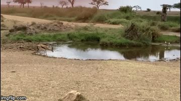
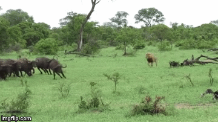

Video: Báo hoa mai phản ứng thần tốc, bật nhảy tóm gọn linh dương impala trên không trung
Bị báo hoa mai truy đuổi, con linh dương impala cố nhảy qua đầu kẻ săn mồi để trốn thoát nhưng không ngờ đối phương cũng là một kẻ nhào lộn nổi tiếng, cuối cùng đành bỏ mạng dưới nanh vuốt của con báo nhanh nhẹn.
Phát hiện bầy linh dương impala đang kiếm ăn ven sông, con báo hoa mai lén lút tiến đến gần, chuẩn bị cho một cuộc phục kích. Linh dương Imapala hay linh dương sừng cao là sinh vật bản địa ở thảo nguyên châu Phi. Chúng là một loài ăn cỏ vô cùng phổ biến ở châu lục này. Do kích cỡ trung bình và bản tính nhút nhát, linh dương impala là con mồi tiềm năng của các loài thú săn mồi nơi đây. Tuy nhiên điều đó không có nghĩa chúng là một con mồi dễ xơi. Linh dương impala sở hữu hình thể gầy, thanh thoát, cho phép chúng di chuyển rất nhanh và uyển chuyển. Đặc biệt, loài linh dương có thể bật nhảy lên không và đảo hướng vô cùng dễ dàng, giúp chúng né được những cú vồ chí mạng của các loài thú săn mồi.

Tuy nhiên báo moa mai không phải là một kẻ đi săn xoàng xĩnh. Báo hoa mai là một trong bốn loài mèo lớn sinh sống ở châu Phi và châu Á. Tuy thân hình tương đối nhỏ so với các loại mèo lớn khác nhưng báo hoa mai là những kẻ săn mồi nguy hiểm đáng sợ. So với sư tử hay hổ, chúng có thể kém cạnh về uy lực hay kích cỡ nhưng về độ khéo léo thì các loài mèo lớn hơn khó lòng địch lại báo hoa mai. Chúng được biết đến với khả năng leo trèo tốt hơn sư tử và bơi lội chẳng thua gì hổ. Chúng rất nhanh nhẹn và thường chạy với tốc độ hơn 58km/h. Chúng nhảy xa hơn 6m theo chiều ngang và nhảy cao tới 3m theo chiều dọc. Với khả năng này, báo hoa mai có thể triệt hạ cả những con mồi ở trên không thay vì chỉ tấn công những mục tiêu chậm chạp dưới mặt đất. Báo hoa săn linh dương không phải điều dễ dàng, impala có xu hướng chạy tán loạn để phân tán sự chú ý của kẻ săn mồi. Con báo phải chọn cho mình một mục tiêu để tập trung sức lực truy đuổi. Trong trường hợp mục tiêu chạy thoát thì báo phải nhanh trí đổi sang mục tiêu khác. Khi đã tiếp cận đủ gần với bầy linh dương, con báo lao tới, toan quật ngã con mồi gần nhất. Con linh dương sắp bị bắt, cố nhảy lên cao để đổi hướng chạy nhưng không ngờ đối phương cũng tung mình theo và quật ngã con mồi ngay trên không trung. Kết cục con báo nhanh nhẹn đã tóm gọn con linh dương, bắt đầu tha đến nơi an toàn để ăn thịt.
Xem thêm >>>Video: Trăn khổng lồ anaconda tử chiến cá sấu caiman, con nát đầu, kẻ ngạt thở-

Video: Trăn khổng lồ anaconda tử chiến cá sấu caiman, con nát đầu, kẻ ngạt thở
Cá sấu caiman tuy là con mồi của loài trăn khổng lồ anaconda nhưng về bản chất chúng vẫn là loài động vật ăn thịt khét tiếng ở đầm lầy châu Phi. -
Video: Bản lĩnh của chúa tể thảo nguyên - một mình lao thẳng vào đàn trâu rừng
Con sư tử đực kiêu hãnh lao thẳng vào tấn công cả đàn trâu rừng hàng chục con mà không cần đến sự giúp sức của bất kỳ ai. -

Video: Bầy chó hoang giành giật xác linh dương kudu từ miệng hà mã
Giữa hà mã và bầy chó săn diễn ra một cuộc giằng co vô cùng căng thẳng, loài thú ăn cỏ khổng lồ muốn bảo vệ xác linh dương còn những con thú ăn thịt ma mãnh tìm cách cướp miếng ăn ngon lành.